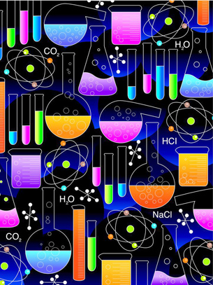

© 2008 Jupiterimages Corporation
In Module 7 you learned about chemical equilibrium. In this module you will apply your understanding of the principles of equilibrium to chemical systems containing aqueous acids and bases. You will use your knowledge of dynamic equilibrium, equilibrium position, and shifts in equilibrium. You will also rely on your ability to analyze an equilibrium system using quantitative techniques (like calculating a value for the equilibrium constant, Kc) and your ability to complete an ICE table.
Your study of the equilibrium of aqueous acids and bases will include an investigation of environmental and biological systems. You will investigate how the components of these systems can interact to form equilibrium systems, and you will consider how the behaviour of these systems can be better understood through knowledge of the principles of chemical equilibrium.
In Module 8 you will investigate the following question:
In Modules 5 and 6 you used a Table of Selected Standard Electrode Potentials to analyze redox systems. The Module 8 Assessment will require you to consider the construction of the Table of Relative Strengths of Acids and Bases, which you will use throughout this module.
Remember that each lesson will also be organized around questions intended to guide your study. As you proceed through Module 8, you may record answers to these questions and any interrelationships that exist between them in a concept map or graphic organizer. More information is available in the Unit D Concept Organizer. In the Module 8 Summary you will receive further information on how you can use your concept map or graphic organizer to review the concepts you studied in this module.